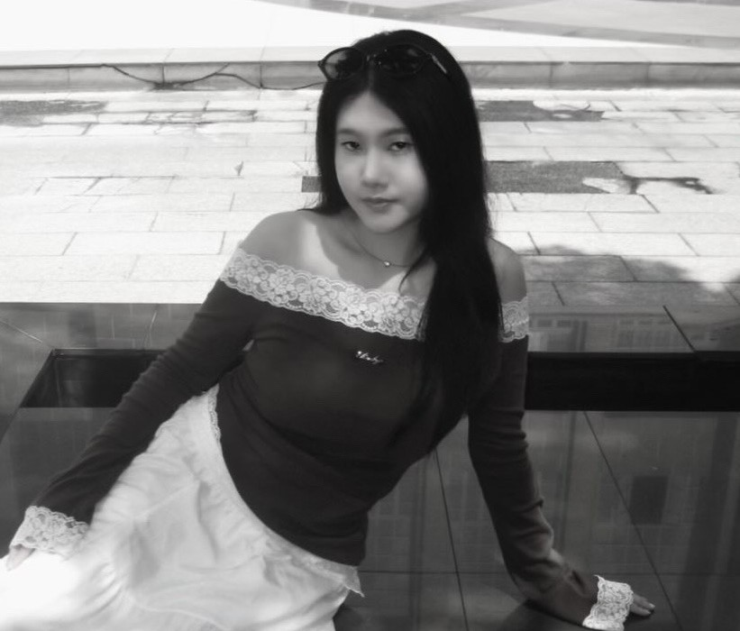

Napatsarawaree Rattanapatum
B.Sc. in Media Technology (Medical Media Innovation)
School of Architecture and Design, King Mongkut's University of Technology Thonburi
Hi! I'm a third-year Media Technology student at KMUTT with a passion for using creativity and technology to make everyday experiences better.
Specializing in Medical Media Innovation, I'm especially interested in how design can help people understand, interact with, and benefit from technology. My interests include UX/UI design, Unity 3D, biomechanics, and interactive media, where I enjoy combining creative thinking with user-centered problem-solving.
I'm always excited to explore new tools, learn new skills, and take on challenges that help me see things from different perspectives. For me, good design isn't just about making something look beautiful it's about understanding people and creating experiences that genuinely work for them.
I'm looking forward to collaborating with others, gaining hands-on experience through internships and hackathons, and exploring the potential of healthcare technology through future studies in Health Data Analytics and Machine Learning.
One idea at a time, I hope to create things that are useful, thoughtful, and meaningful :-)